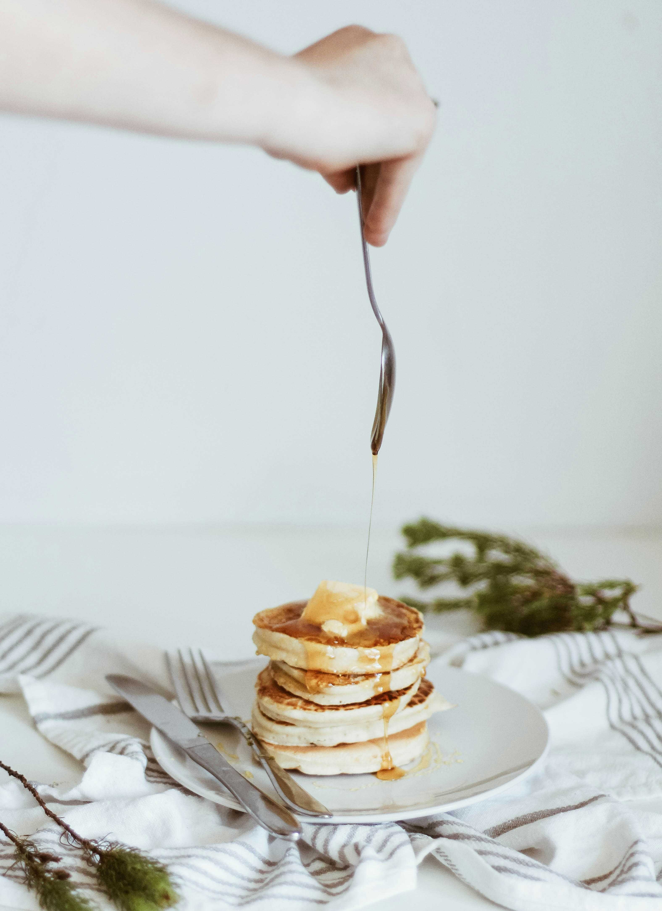

Pancakes

Cook up some sweet pancakes with this quintessential recipe
Pancakes are the best when you need something quick but filling, or to delight your tastebuds.
Lucky for us, making the fluffiest pancakes can be easy peasy.
Just follow this tested recipe, and you'll have your plate of joy in front of you in no time.
Ingredients
- Flour
- Baking powder
- Sugar
- Salt
- Egg
- Milk
- Butter
Let's get cooking!: Steps to take
- Take some flour, some baking soda, a tablespoon of sugar, and a pinch of salt.
- Sift everything into a bowl.
- Make a well, then add an egg and some milk.
- Mix thoroughly.
- Lather the base of your pan with enough butter.
- Scoop some of the mixture onto the pan.
- Allow it cook for a minute or two, then flip.
- Cook until both sides brown, then serve with a drizzle of honey.